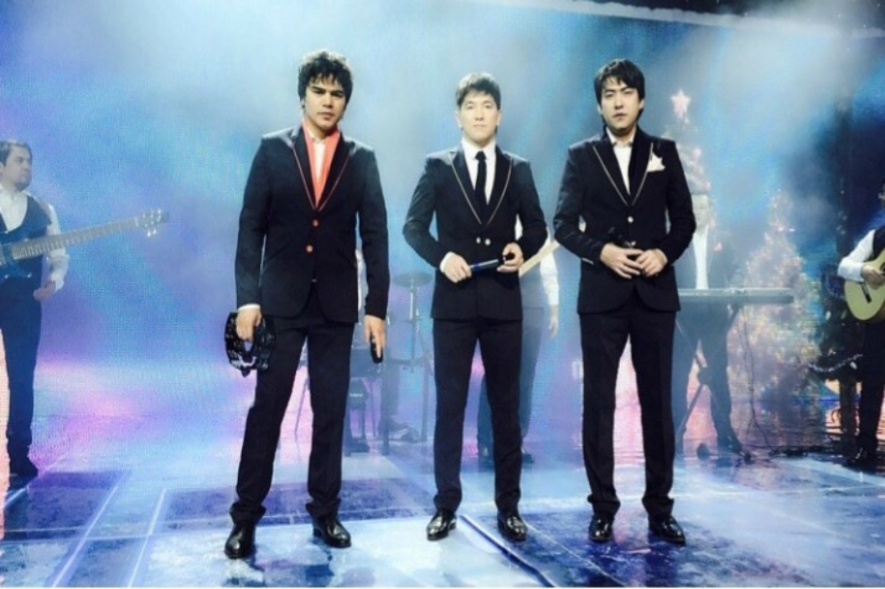
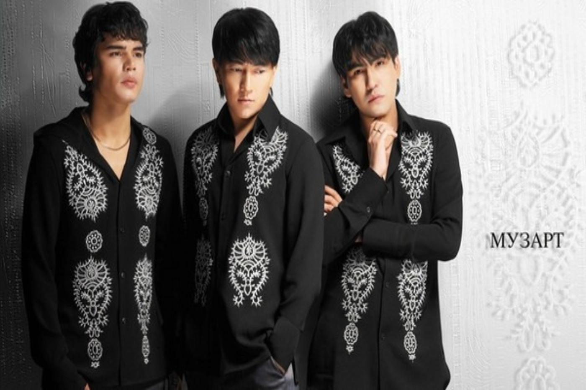

«Музарт» тобы
Toqtar Sanzhar ( Journalist )
April 11, 2020
Елдің қошеметіне бөленіп, халықтың қалаулысы болып жүрген «Музарт» тобына биыл 19 жыл. Қазіргі таңда «Музарт» тобының мүшелері ел ағасы болып, еліміздің құрметті азаматтарына айналды.
«Музарт» тобы 2001 жылы құрамында әншілер: Сәкен Майғазиев, Мейрамбек Бесбаев, Мақсат Базарбаев бар трио ретінде құрылған. Қазіргі уақытта топ сегіз мүшеден тұрады, топта үш әнші өнер көрсетсе, қалғаны ансамбл ретінде өнер көрсетеді.
Қазақ қызының батырлығы мен өжеттігіне, даналығы мен қайсарлығына тарихта мысал жеткілікті.
Мақсат Базарбаев кейіннен жеке әнші ретінде бөлініп, оның орнына Кенжебек Жанәбілов келген болатын.Топ құрылған сәттен-ақ халық ықыласына тез бөленді. Азғантай уақыттың ішінде топ халық алдында жеке концерттерін өткізіп, шет елдерге концерттік бағдарламалар жүргізе бастады. Әр концерттерін ақ батамен бастайтын қазақ эстрада жұлдыздары көптеген жетістіктерге қол жеткізді. Халықтың қалауымен Музарт тобы "Дарын" жастар сыйлығын, "Ұлттық үздік әнші" жүлдесін, Muzzone телеарнасының "Үздік ұжым " номинациясын жеңіп алды. Халықтың көзайымына айналған – «Музарт» қазіргі таңда әр қазақ үшін қайталанбас ерекше топ.



Әрқайсымыздың жүрегімізден орын алған бұл топ еліміздің тарихында қалатыны сөзсіз. Демек, муза әлемінің «Музартын» бәріміз шын бағалаймыз дей келе, өнер жолындағы ағаларымызға тек табыс пен сәттілік тілейміз!